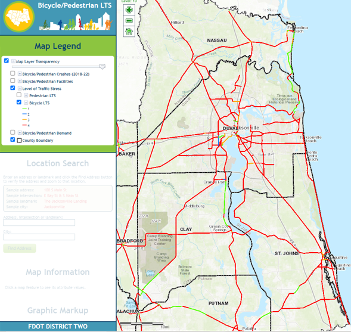

Annual Mobility Report 2024
Understanding the trends and conditions occurring in the North Florida will allow planners and engineers to prioritize resources more effectively as part of the North Florida Transportation Planning Organization’s (TPO) Congestion Management Process. The data presented are an essential part of making evidence-based decisions for the investment in mobility in North Florida. The data presented focuses on Clay, Duval, Nassau and St. Johns counties for the years 2017-2022 and 2023 when available. This report summarizes trends in the following topics:
1 Economic Competitiveness
1.1 Level of Travel Time Reliability
1.2 Truck Travel Time Reliability
1.3 Primary Freight Corridors with Poor Pavement
2 Sustainable Communities
2.1 Transit Accessibility
2.2 Bicyclist and Pedestrian Quality of Service
Link https://fdot-d2-los-pedbike.hdrgateway.com


2.3 Impacts of Investments on the Natural Environment
Link https://etdmpub.fla-etat.org/est/#

2.4 Emissions
2.5 Regional Evacuation Routes
2.6 Trail Connectivity
2.7 Pedestrian Connectivity
3 Safe and Secure Travel
Crash data was compiled from several sources including the FDOT safety office, signal four analytics, and FDOT State Safety Office historical Crash Analysis Reporting (CAR) database. According to the Florida Highway Safety and Motor Vehicles, there were a total of 31,964 crashes that occurred over the four North Florida TPO counties. Duval County accounted for a majority of these crashes due to the county population and extent of roadways present.
3.1 Pedestrian Fatalities
This plot shows fatality data
3.2 Bicyclist Fatalities
3.3 Fatality Percent Changes
The following summarizes the percent change in fatalities for pedestrians and cyclists since 2019.
4 Mobility and Accesibility
4.1 Quantity of Travel
5 Vehicle Occupancy and Transit Ridership
5.1 Quality of Travel
5.2 Accessibility and First/Last Mile Options
5.3 Utilization
6 Equity
7 Preserve and Maintain
8 Reliable and Resilient Infrastructure
9 Tourism
10 Map Example
Here is an example of an interactive map.